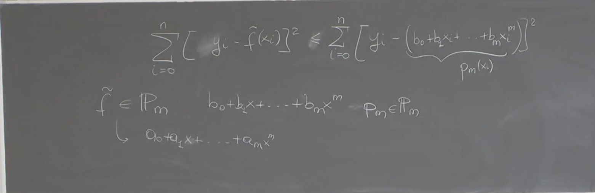

Appunti Lezione: Sistemi Sovradeterminati, Minimi Quadrati e Collegamento alle Equazioni Normali
1. Introduzione ai Sistemi Sovradeterminati
Un sistema lineare si dice sovradeterminato quando il numero di equazioni (righe) è maggiore del numero di incognite (colonne) , cioè .
In tali casi, il sistema in generale non ammette soluzione esatta e quindi si modifica la definizione di soluzione, cercando la soluzione nel senso dei minimi quadrati:
Trovare tale che minimizzi .
2. Soluzione nei Minimi Quadrati
La soluzione nel senso dei minimi quadrati si può ottenere:
-
Via equazioni normali: se ha rango pieno, allora la soluzione soddisfa il sistema:
-
Via fattorizzazione QR: utile per evitare instabilità numerica.
3. Sistemi Sovradeterminati a Rango Non Massimo
Se non ha rango massimo, il problema di minimi quadrati ha infinitamente molte soluzioni. In questo caso si cerca:
La soluzione che minimizza la norma della soluzione tra tutte quelle che minimizzano la norma del residuo:
4. Collegamento con la Regressione Polinomiale
4.1 Polinomio dei Minimi Quadrati
Data una serie di dati , si vuole trovare un polinomio di grado che minimizza la somma degli scarti quadratici:
dove .
4.2 Problema di Minimizzazione Equivalente
Si definisce un generico polinomio , con , e si cerca:

4.3 Forma Vettoriale del Problema
Definiamo:
- matrice di Vandermonde:
Il problema si riscrive come:
Questa quantità rappresenta la norma al quadrato del residuo. La minimizzazione coincide con la risoluzione del sistema sovradeterminato nel senso dei minimi quadrati.
4.4 Coincidenza con le Equazioni Normali
Osservazione: questa formulazione è esattamente la stessa già incontrata nel caso della regressione lineare! Le equazioni normali sono:
Calcolo esplicito dei termini:
-
La matrice ha componenti:
Quindi:
\sum x_i^0 & \sum x_i^1 & \dots & \sum x_i^m \\ \sum x_i^1 & \sum x_i^2 & \dots & \sum x_i^{m+1} \\ \vdots & \vdots & \ddots & \vdots \\ \sum x_i^m & \sum x_i^{m+1} & \dots & \sum x_i^{2m} \end{pmatrix} $$ -
Il vettore ha componenti:
Quindi:
\sum y_i \\ \sum x_i y_i \\ \vdots \\ \sum x_i^m y_i \end{pmatrix} $$
Conclusione: il sistema delle equazioni normali derivato da una visione algebrica (minimizzazione ) coincide esattamente con il sistema derivato con l’approccio analitico via derivate parziali.
5. Sistemi Sottodeterminati
5.1 Definizione
Un sistema lineare è sottodeterminato se con , quindi meno equazioni che incognite. In questo caso:
- Le soluzioni sono infinitamente molte.
- Si cerca la soluzione con norma minima:
5.2 Ipotesi di rango massimo
Si assume che . In questo caso si può usare la fattorizzazione QR dell’ oppure la pseudoinversa.
6. Conclusione: Collegamento dei Due Metodi
La lezione ha mostrato come:
- Il problema dell’approssimazione polinomiale (retta di regressione generalizzata) è un esempio di problema di minimi quadrati.
- La sua formulazione coincide perfettamente con il problema di risolvere un sistema sovradeterminato a rango pieno nel senso dei minimi quadrati.
- I due approcci (analitico e algebrico) portano allo stesso sistema lineare: quello delle equazioni normali.
Questo chiude il cerchio tra la regressione, i sistemi lineari e i problemi di ottimizzazione quadratica lineare.
Appunti Lezione: Sistemi Sovradeterminati, Minimi Quadrati e Derivate - Parte 2
7. Sistemi Sottodeterminati
7.1 Motivazione ed Esempio Introduttivo
Quando un sistema lineare ha meno equazioni che incognite, ossia , il sistema si dice sottodeterminato.
Esempio semplice: considerare l’insieme delle rette passanti per un punto: sono infinite. Serve una condizione aggiuntiva per selezionare una soluzione.
Nel contesto dei sistemi lineari, cerchiamo la soluzione classica che soddisfa ma che abbia norma minima:
Troviamo tale che e minimo.
7.2 Definizione della Soluzione a Norma Minima
Poniamo:
La soluzione soddisfa due condizioni:
- (soluzione in senso classico)
- ha norma minima tra tutte le soluzioni
Si dimostra che questa soluzione ha forma chiusa:
7.3 Verifica delle Due Condizioni
Condizione 1:
Sostituiamo l’espressione di :
Infatti , la matrice identità. Quindi soddisfa il sistema.
Condizione 2: è minima
Si dimostra che ha norma minima con il seguente ragionamento:
Sia una qualunque soluzione del sistema, cioè . Allora:
Osservazione: il termine misto è nullo. Per verificarlo usiamo il fatto che e quindi:
Inoltre , e quindi i due spazi sono ortogonali.
Quindi il prodotto scalare .
Segue:
7.4 Problemi Numerici e QR
Anche qui, come nei sovradeterminati, il calcolo esplicito è numericamente instabile. Si preferisce usare la fattorizzazione QR della matrice trasposta:
Allora:
Questo sfrutta la struttura ortogonale di e la superiorità triangolare di .
8. Approssimazione delle Derivate
8.1 Motivazione Fisica e Ingegneristica
Spesso è più interessante monitorare la variazione di una funzione piuttosto che la funzione stessa:
- Ingegneria civile: stress e deformazioni dipendono da (derivata dello spostamento)
- Fluidodinamica: il flusso (cioè derivata) di inquinanti è più importante della concentrazione istantanea
8.2 Definizione Analitica
La derivata prima si definisce come:
Problema: il limite non è computabile numericamente.
8.3 Differenze Finite in Avanti (Forward)
Schema:
Errore stimato usando Taylor (con ):
Conclusione: schema di ordine 1. L’errore è .
8.4 Differenze Finite all’Indietro (Backward)
Schema:
Errore:
Conclusione: anche questo è schema di ordine 1, errore .
8.5 Differenze Finite Centrate (Centered)
Schema:
Sviluppi di Taylor fino al terzo ordine, con , portano a:
Conclusione: schema di ordine 2, errore .
Nota: questo schema richiede più regolarità (classe ) ma converge più rapidamente.
8.6 Tabella Riepilogativa degli Schemi
| Schema | Formula | Ordine | Regolarità richiesta |
|---|---|---|---|
| Differenze in avanti | 1 | ||
| Differenze all’indietro | 1 | ||
| Differenze finite centrate | 2 |
8.7 Considerazioni Pratiche
-
Ai bordi dell’intervallo, non è possibile usare il centrato:
- In : si usa
- In : si usa
-
Scelta dello schema:
- Se possibile, usare quello centrato: più preciso
- Se la funzione è solo , usare schema in avanti o indietro
-
L’errore in ciascun caso può essere stimato con il massimo della derivata coinvolta nel resto di Taylor
Esercizio consigliato: mostrare che corrisponde alla derivata della retta che interpola i punti e .
Approfondimento: costruire lo sviluppo di Taylor completo per ogni schema e verificarne l’errore.
9. Conclusione
Con questa lezione si chiude il capitolo sui sistemi lineari indeterminati. A seguire, il corso affronterà temi di approssimazione di derivate e integrali, proseguendo il percorso sull’interpolazione e l’analisi numerica.
Se vuoi che espanda anche la parte degli esercizi o inserisca dei box di sintesi visuale, fammi sapere!